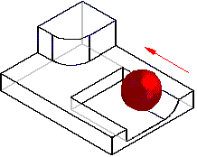
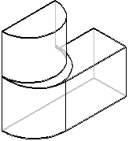

How does blending work?
To understand how blending works, think of a rolling ball. The entities you select to blend define the path of the ball. As the ball rolls, it removes anything in its path and adds material where necessary to create a smooth blend between the selected entities.

Blending uses a roll along and roll across method for creating a blend. This roll along and roll across method causes the blend to maintain the selected edges or continues the blend across the selected edges. Look at the following blend between two faces. In this example the blend radius causes the blend to extend over the edge of the face. The roll along and roll cross method causes the blend to roll along the edge of the face.

How do I
Round part edgesEdit a synchronous round
Control the edit behavior of a synchronous round
Reorder rounded part edges
Blend part faces
Blend surface bodies
Construct a variable radius round
Learn more
Rounding and blendingEditing rounds
Rounding order
Rounding overflow options
Defining the blend shape
Blends on surface bodies
Tangent hold lines
Variable radius rounds
Look up more details
Round commandRound command bar (ordered)
Round command bar (synchronous)
Round Options dialog box
Round Parameters dialog box
Reorder Round command
Blend command
Blend command bar
Surface Blend Parameters dialog box